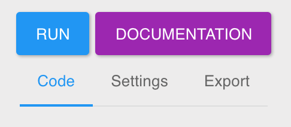

Introduction
Synchronise is a tool that helps you integrate Web Services in your app or IoT project in a breeze. Instead of having to integrate multiple SDKs and libraries, you install only Synchronise’s SDKs in your projet and you will be able to execute any Web Service you want.
Our platform is made of two main elements:
Components: They are small block of code written in a Javascript, that execute a simple action. That action could be anything such as sending an email, processing a credit card, or even getting a list of the best cats on www.catapp.org, you name it…
Workflow: They allow you to execute multiple components as a group. For example, you could create a workflow to sign up a new user on your website. That workflow could send an email to that new user with Mailgun, create a customer account on Stripe, add that user on your Mixpanel app… We have made a very nice interface to let you create workflows in just a few seconds. This is what creating a workflow feels like:
Integrating a Component or a Workflow in your app is easy thanks to our client libraries. They are very similar in every languages making your life as a developer a lot easier. Basically, you work on a Component or Workflow once, and you integrate it everywhere in just seconds.
Components
Components are simple functions written in Node.JS. They can do anything you want them to, from sending an email to cropping an image or even calling a Uber cab. There are dozens of Components already available on our marketplace synchronise.io/marketplace and they are all free to use.
Run a component
Make sure you have integrated our SDK and initialized it before running a Component.
curl -X POST \
-H "x-synchronise-public-key: {{PUBLIC_KEY}}" \
-H "Content-Type: application/json" \
-d '{"id":"ID_OF_COMPONENT" /* , WHATEVER INPUTS YOU WANT TO SEND*/}' \
https://api.synchronise.io/component/run
// We prepopulate the PUBLIC KEY if you are connected to your account
Synchronise.init("{{PUBLIC_KEY}}");
Synchronise.Component.run("ID_OF_COMPONENT",
{/* , WHATEVER INPUTS YOU WANT TO SEND*/}, {
success: function(data){
console.log(data);
},
error: function(err){
console.log(err);
},
always: function(){
// Always called, whether success or error
}
});
Using a Component is very easy thanks to our client libraries. Bear in mind that Components are simply cloud functions. They can be called as many times as you wish and in any order.
Components take Inputs and give Outputs.
Inputs are very similiar to the idea of parameters for a function, but they are much more than that.
They all of have a type (Number, String, Boolean…) and can also have a subtype (Email, Float, IP Address).
When you execute a Component you need to provide all mandatory Inputs with the correct type of data.
If one of the mandatory Inputs is not provided or if its type is not correct, the execution of the Component will fail.
The type of an Input must at least match its Top level type, aka Number, String, Date… If an Input needs to be of a specific subtype, it will automatically be matched and converted if necessary.
For example an Input of type “Date” will accept anything that is close enough to a Date.
“2016-03-01” or “18:59:01 2020-04-12” will both be accepted and converted to a Javascript Date.Outputs A Component can sometime provide an answer after execution.
The same rules apply to Ouputs in term of types of data, than for the types for Inputs.
If Component does not provide all required Outputs or if an Output has an incorrect type, its execution will fail.
Be aware, a Component can return more Outputs than declared in its environment. These are usually debugging Outputs that are not relevant to a normal execution flow. Simply visit the page of a Component to discover the Ouputs it returns.
Create a Component
Our Market Place is a great opportunity for saving time and avoiding recreating Components that already exists. Despite its richness, you could sometime require a specific action that is not available.
Common reasons for creating your own Components are:
- Making your Web Service available to other developers and promoting your brand
- Creating a specific action that you cannot find on the market place
- Creating a Component that only you and your team can see
Introduction
We have made it very simple for anyone to create a Component. There are no tools to setup, no software to install and not even a command line interface to harness. Everything happens on our website and it only takes a few minutes to go from idea to a Component available on our Market Place.
We have created a web interface that lets you write code for your Components anywhere you have an internet connection. Here is how it looks like:
Interface
The interface is made of two main elements. Everything on the left side of the screen is about the execution of the Component. That includes the Inputs, Outputs and the actual code. Everything on the right side of the screen is about setting up testing and exporting the Component.
Left side: The code
The left side of the screen displays everything you need to shape the execution of your Component
The first block contains the Inputs you declared for your Component
To add a new Input, simply click the “Add Input” button, type the name of the Input and press the return key
You can change the type of the Input by clicking on the types that are already set. You will see a list of types like Number, Boolean, Date…
If an Input is not mandatory for the Component to execute properly, you can check the “optional” checkbox.The second block contains the actual code of your Component.
Just like any other proper code editor it comes with pre-built features to help you type code faster and more efficiently.
The editor will:
-> autocorrect the syntax of your code,
-> autocomplete as you type with useful elements such as, the third party modules available, the Inputs and the Outputs you can use, any other variables or functions you created within the code
-> autoindent and put brackets for you
-> let you select with multicursors
In other words, a desktop class IDE! Go and try it to discover what’s under the hood.The third block contains the Outputs of your Component
To add a new Output, click on the “Add Output” button, type the name of the Output and press the return key
You can change the type of the Output by clicking on the types that are already set. You will see a list of types like Number, Boolean, Date…
Right side: The toolbar
The first element of the toolbar contains all the action buttons. 
The “Run” button, executes the Component with the current state of the “Inputs”, “Code” and “Outputs” you see on your screen. It is very useful in order to debug your code as you create it.
The “Documentation” simply opens this documentation to the “Create a component” section
The 3 tabs “Code”, “Settings”, “Export”, let you manage and export your work on the ComponentThe second block lets you send Inputs values to your Component when you execute it.
You can type the values you want and the system will automatically convert them to the correct types when you run your Component. This is simply an abstraction to sending your Inputs by code nothing more, but it makes the debuguing process a lot easier.The third block gives you some information about the execution of your Component. The “Results” displays the Outputs of your Component. It is an abstration of the success and error callbacks on our SDK.
The “Console” displays any logs coming from your component. To display some log use the “console.log();” function in your code. You can send literally any data you want in the log.
Inputs
// To display the Input <b>user_id</b> in the logs we would do
console.log(Input.user_id);
Inputs contain the data your Component can receive when it is executed. A Component can receive an unlimited amount of Inputs. During the execution of your Component, Inputs are available through the special keyword Input.
You can declare Inputs to be delivered to a Component when it is executed. All declared Inputs must have a type (i.e Text, JSON, Number, Date…).
At execution time, the type of an Input is matched against its expected type. If the type of the data does not match the expected type, the request will return an error.
If you need to send an Input without type matching, simply do not declare it. An undeclared Input will still be available in the Component environment.
Type validation:
-
Text
- Text: Any text Input is accepted
- Email: Check if the Input is an email
- Url: Check if the Input is an URL
- Credit Card: Check if the Input is a credit card
- Alpha: Check if the Input contains only letters (a-zA-Z)
- Alphanumeric: Check if the Input contains only letters and numbers
- Ascii: Check if the Input contains ASCII chars only
- Base64: Check if the Input is base64 encoded
- UUID: Check if the Input is a UUID (version 3, 4 or 5)
- IP: Check if the Input is an IP (version 4 or 6)
- ISBN: Check if the Input is an ISBN (version 10 or 13)
- ISIN: Check if the Input is a stock/security identifier
- ISO8601: Check if the string is a valid ISO 8601 date
- JSON: Check if the Input is valid JSON
-
Number
- Float: Check if the Input is a float. Will try casting if a string is provided
- Decimal: Check if the Input represents a decimal number, such as 0.1, .3, 1.1, 1.00003, 4.0, etc. Will try casting is a string is provided
- Integer: Check if the Input is an integer. Will try casting if a string is provided
- Hexadecimal: Check if the Input is a hexadecimal number. Will try casting if a string is provided
- Boolean: Check if the Input is a boolean
- Date: Check if the Input is a date
Outputs
// To return an Output called <b>results</b> we you would do this:
// "Results" does not need to be an array, it can be of any type
Output.results = {
artist: "Bob Dylan",
albums: [{
id:1,
name: "Blonde On Blonde"
}]
};
success();
// You can also provide the Output to success() using a JSON object:
success({
results: {
artist: "Bob Dylan",
albums: [{
id:1,
name: "Blonde On Blonde"
}]
}
});
// And finally you can use a combination of the two.
// The following code will return both the Outputs <b>another</b> and <b>album</b>
Output.another = "Value";
success({
results: {
artist: "Bob Dylan",
albums: [{
id:1,
name: "Blonde On Blonde"
}]
}
});
Outputs are data that your Component can send/answer when it is executed. It is very similar to the idea of a return statement of a function.
A Component can send an unlimited amount of Outputs.
You can set the value of an Output anytime and anywhere in your code using the special keyword Output.
All declared Outputs are mandatory and failing to provide one of the Output from the Component will return an error.
All declared Outputs must have a type defined (i.e Text, JSON, Number, Date…).
At execution time, the data type of an Output is matched against its expected type.
If the Output data type does not match the expected type, the request will return an error.
You can send any Output you want without type matching, simply do not declare it.
An undeclard Output will still be available on the client when your Component executes. However, it will not be available to be used in a Workflow
Type validation:
-
Text
- Text: Any text Output is accepted
- Email: Check if the Output is an email
- Url: Check if the Output is an URL
- Credit Card: Check if the Output is a credit card
- Alpha: Check if the Output contains only letters (a-zA-Z)
- Alphanumeric: Check if the Output contains only letters and numbers
- Ascii: Check if the Output contains ASCII chars only
- Base64: Check if the Output is base64 encoded
- UUID: Check if the Output is a UUID (version 3, 4 or 5)
- IP: Check if the Output is an IP (version 4 or 6)
- ISBN: Check if the Output is an ISBN (version 10 or 13)
- ISIN: Check if the Output is a stock/security identifier
- ISO8601: Check if the string is a valid ISO 8601 date
- JSON: Check if the Output is valid JSON
-
Number
- Float: Check if the Output is a float. Will try casting if a string is provided
- Decimal: Check if the Output represents a decimal number, such as 0.1, .3, 1.1, 1.00003, 4.0, etc. Will try casting is a string is provided
- Integer: Check if the Output is an integer. Will try casting if a string is provided
- Hexadecimal: Check if the Output is a hexadecimal number. Will try casting if a string is provided
- Boolean: Check if the Output is a boolean
- Date: Check if the Output is a date
Third Party Modules
// Example of using the package 'request'
request('http://www.urltoserver.com', function (error, response, body) {
});
Although creating a Component is quick, it can be even faster with the use of a third party package.
We have installed some public Third Party npm packages on our infrastructure.
They are directly available as global variables in the context of your component.
Cannot find what you are looking for? We are very open to new ideas. If you need a package of any sort, contact us and we will add it in less time than it takes to peel a potato.
Available modules
Crypto
JavaScript implementations of standard and secure cryptographic algorithms.
Keyword: crypto
Documentation
Lazy
JavaScript implementations of standard and secure cryptographic algorithms.
Keyword: crypto
Documentation
Lazy
Lazy lists for node
Keyword: Lazy
Documentation
Buffer
Native Buffer class of Node.JS
Keyword: Buffer
Documentation
Mailgun
Simple Node.js helper module for Mailgun API
Keyword: mailgun
Documentation
Request
Simplified HTTP request client
Keyword: request
Documentation
Underscore
JavaScript’s functional programming helper library
Keyword: _
Documentation
Clearbit
Client for Clearbit.co business intelligence APIs
Keyword: clearbit
Documentation
Stripe
Stripe API wrapper
Keyword: stripe
Documentation
Twilio
A Twilio helper library
Keyword: twilio
Documentation
Xero
A simple node library for Xero Private Applications
Keyword: xero
Documentation
Request a module
We know it is difficult to predict all your wishes. Don’t be shy and let us know what package you need. We will add it to our catalog in no time.
Publishing on the Market Place
Benefits
Review Process
Project Page
Shared Project vs Private Project
SDKs
Node.JS
Download
npm install synchronise –save
Require
var Synchronise = require(‘synchronise’);
Initialize
Synchronise.init(“{{PUBLIC_KEY}}”);
Javascript
Integrate
<script src=“https://js.synchronise.io/1.0.min.js”></script>
Initialize
<script type=“text/javascript”>
Synchronise.init(“{{PUBLIC_KEY}}”);
</script>